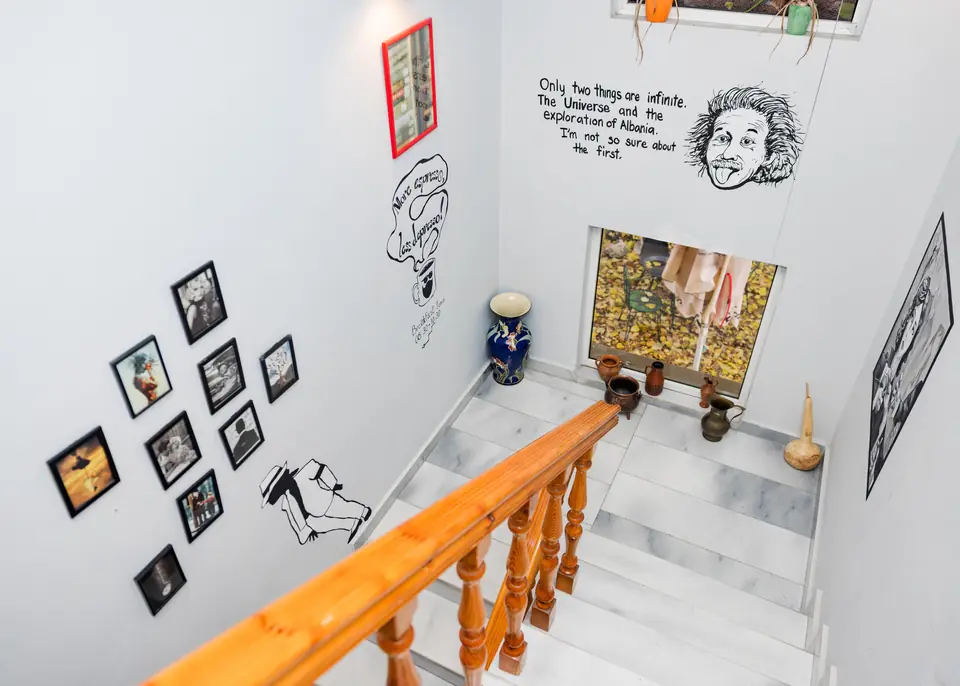
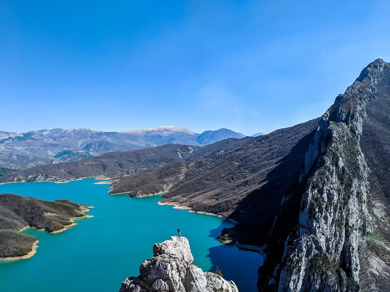
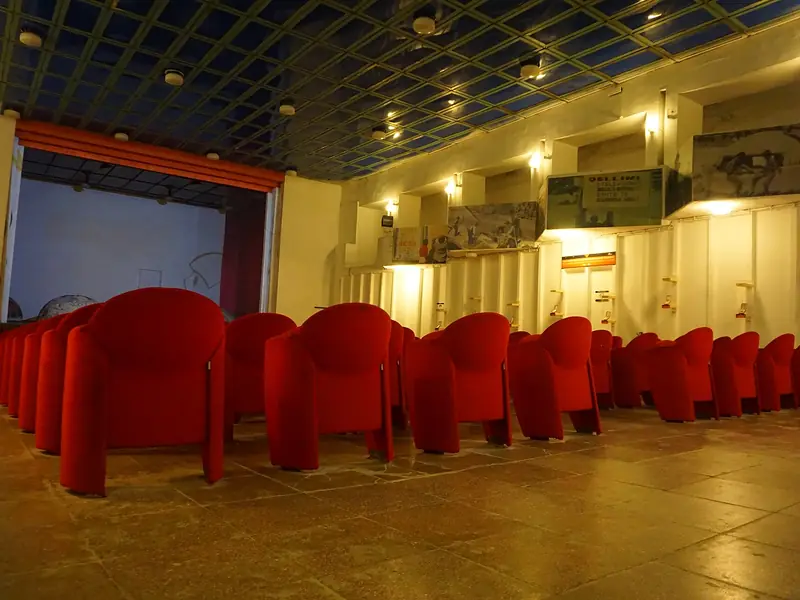
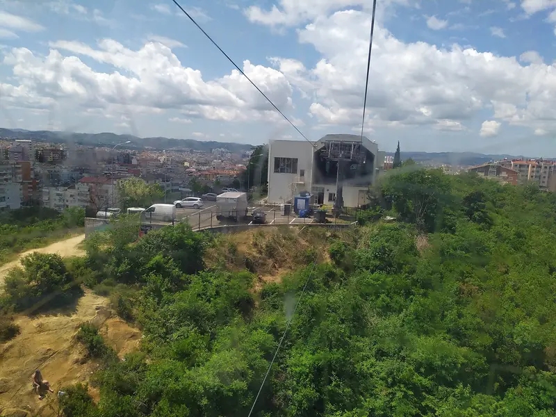
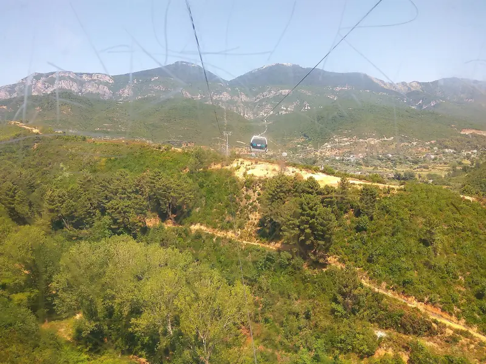

Things to do in Tirana
Both houses help you plan trips and transport. Some trips leave from the hostel; for the rest, we'll tell you how to get there.

With the hostels

Hike to Lake Bovilla
A reservoir in Dajti Mountain National Park, about 14 km north-east of Tirana, that gives the city most of its drinking water. You're picked up at the hostel, walk around the lake, swim when the weather allows and are back in the afternoon. It runs with at least 4 people.
Ask about the next hikeFree city tour
The city tour at The Bearded Dad is free for guests.
Ask when the next tour isPub crawl
Three bars with a local Albanian guide, leaving from the reception after the evening events.
The Albanian Alps
The Bearded Dad also organises a three-day trip north: a boat on Lake Koman, then Valbona and Theth.
In the city and on Dajti

Bunk'Art 1
A five-storey nuclear shelter built into a hill near Tirana for the communist leader Enver Hoxha. Since 2014 it has been a museum and art space about the Second World War and the communist years.

Dajti Ekspres
The cable car that goes up Mount Dajti from the eastern edge of the city.

Mount Dajti
The mountain just east of Tirana, inside Dajti Mountain National Park, with a view over the city.
On foot from the hostels
Skanderbeg Square is 18 minutes from the Blue Door and 12 from The Bearded Dad. The New Bazaar is 9 minutes from the Blue Door and 17 from The Bearded Dad.
Near the square, Bunk'Art 2 is a second bunker museum, about the Sigurimi, the secret police of the communist years.
Photos: Lake Bovilla by Granit Temaj (CC BY-SA 4.0); Bunk'Art 1 by Andrew Milligan sumo (CC BY 2.0); Dajti Ekspres by Leeturtle and Mount Dajti by Visem (CC BY-SA 4.0). All from Wikimedia Commons, cropped.